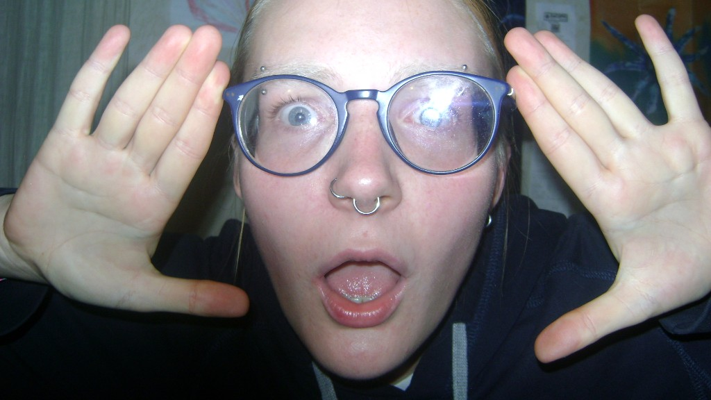
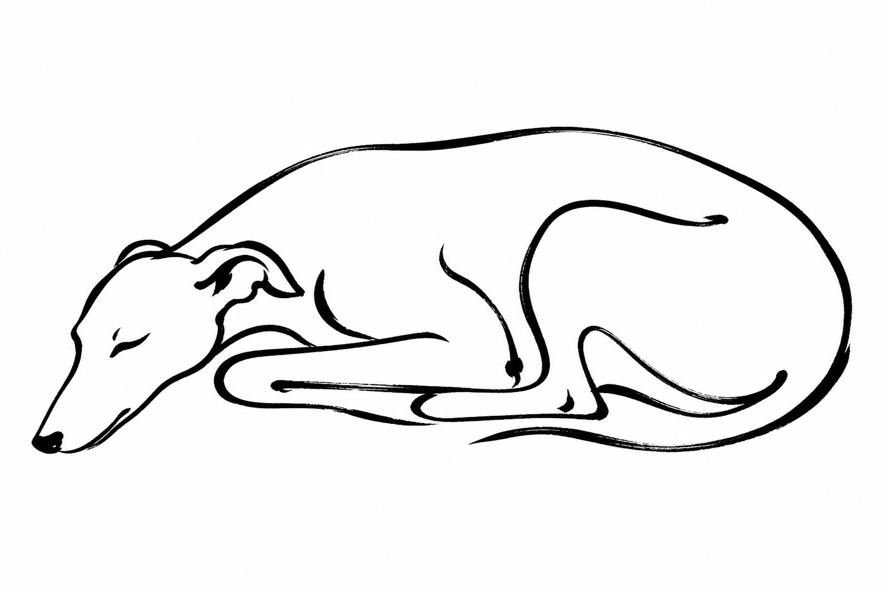

Identità visiva
Logo, palette, tipografia e materiali per dare forma a un marchio riconoscibile.
Designer visiva
Il mio processo creativo parte sempre da una tensione: il rapporto tra chi guarda e chi è guardato, tra la superficie e ciò che nasconde. Attraverso la sovrapposizione di texture e una gestione elettrica del colore, costruisco narrazioni che sfidano la percezione. I miei lavori sono frammenti di un'allucinazione digitale, pensati per chi non ha paura di guardare oltre la nitidezza. Credo che il design debba essere una vibrazione, un modo per dare corpo a quegli stati d'animo che le parole non riescono a definire.
Logo, palette, tipografia e materiali per dare forma a un marchio riconoscibile.
Locandine, layout e composizioni per eventi, campagne e progetti culturali.
Ritratto, reportage e direzione creativa — dal concetto alla post-produzione.
Riprese, montaggio e sperimentazione visiva per narrazioni in movimento.
I primi due sono lavori miei — nati da immagini che non riuscivo a smettere di guardare. Il terzo è un progetto universitario in cui i miei colleghi mi hanno chiesto di fare la protagonista, una cosa che non mi era mai capitata. Ho accettato, e mi sono ritrovata a fare riprese scomode, a spingermi oltre quello che credevo fosse il mio limite. Sono i tre lavori in cui ho capito di più su come lavoro.
Ti interessa un progetto simile?
Contattami →Ascolto il progetto, i valori e il pubblico. Prima di toccare lo schermo, capisco cosa deve comunicare e a chi.
Raccoglo riferimenti visivi, analisi di mercato e contesto culturale. Il design non nasce nel vuoto.
Sperimento, decostruisco e ricostruisco. Ogni scelta — tipografia, colore, composizione — è intenzionale.
Rilascio materiali pronti all'uso: file vettoriali, mockup e guide stilistiche se necessario.

Designer lituana, base a Roma. Mi muovo tra identità visiva, fotografia e sperimentazione digitale — con uno sguardo ibrido fatto di culture, lingue e sensibilità diverse.
Leggi la mia bio → Scarica il CV (PDF)Hai un progetto in mente? Scrivimi — sono disponibile per collaborazioni, commissioni e progetti creativi.
